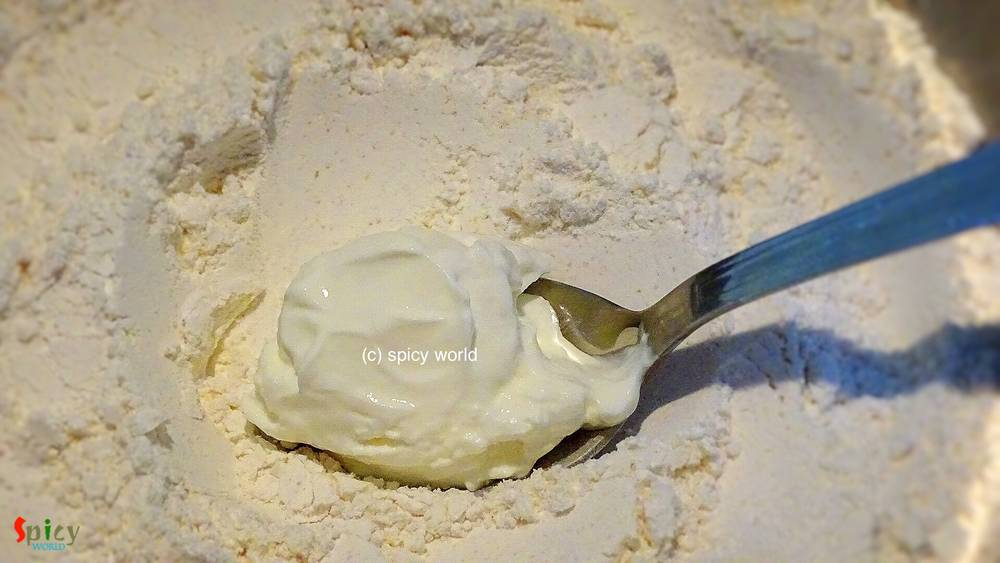

Simple and Easy Recipes
Bhatura (with Yeast)
© 2016 Spicy World, Published on: Nov 8, 2015
'Chola-Bhatura' is a very popular combo in India and also in many other countries. The origin of this dish is from Punjab. But you can get this combo as street food in Delhi and many other parts of India. I ate and learnt homemade 'chola-bhatura' from my friend Monica, when I lived in New Jersy. Her 'bhatura's always came out very flakey and puffed up. There is nothing but 'super tasty' I can say about her chola. I have already posted that recipe. Last night I made bhaturas with niramish aloo torkari or spicy potato curry. We, two, really loved and enjoyed them. Try this in your kitchen and make your dinner a special one.
")
Ingredients
- 2 cups of all purpose flour / moida.
- 3 Teaspoons semolina / sooji.
- 2 Teaspoons milk powder.
- 3 Teaspoons curd / yogurt.
- 2 Teaspoons of ghee / oil.
- 1 Teaspoon yeast.
- 1 Teaspoon sugar.
- half Teaspoons salt.
- 6 Tablespoons of warm water.
- White oil for deep fry.
")
Steps
Add the sugar, salt and yeast into the warm water. Cover the bowl and let it rest for 15 minutes. Remember, the water should not be hot.
Put the flour in a mixing bowl. Add semolina and milk powder. Mix it.
Add the curd into the flour mixture. Mix it very well.
Put the ghee/oil and again mix the entire thing very well.
Now add the yeast water in the flour. Mix it with your hand and make a soft dough. If you need more water while mixing, add some warm water.
Now knead the dough with the help of your palm for 10 minutes. It will become more smooth.
Apply little oil on the surface of the dough. It will keep the dough moist.

Cover the bowl with a lid and keep it in a warm place for 5 hours. During winter you need to keep it 7-8 hours.
After 3 hours of farmenting the dough should look like this.
Knead the dough once again for 3-4 minutes and put in the same place for another 2 hours.
When the dough becomes fully farmented make lemon size balls out of it.

Dip one ball in dry flour and flatten it to 2-3 inches with a rolling pin. Try to make them oval or round in shape.
Put it in very hot oil for deep fry. It will puff up. Remember, the oil should be very much hot. Fry them one by one.
If the inside of the bhaturas become this net like texture, that means those are the perfect bhaturas.
Your bhatura is ready ...
Enjoy them hot with chola or any spicy curry.
 (Final)")